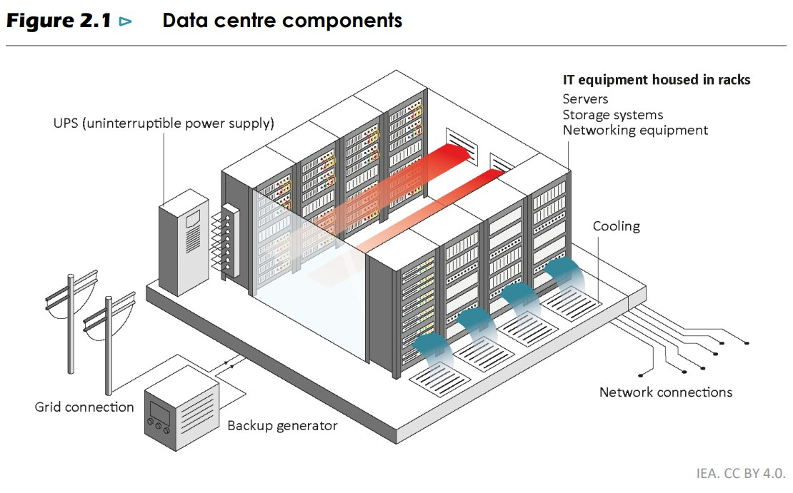
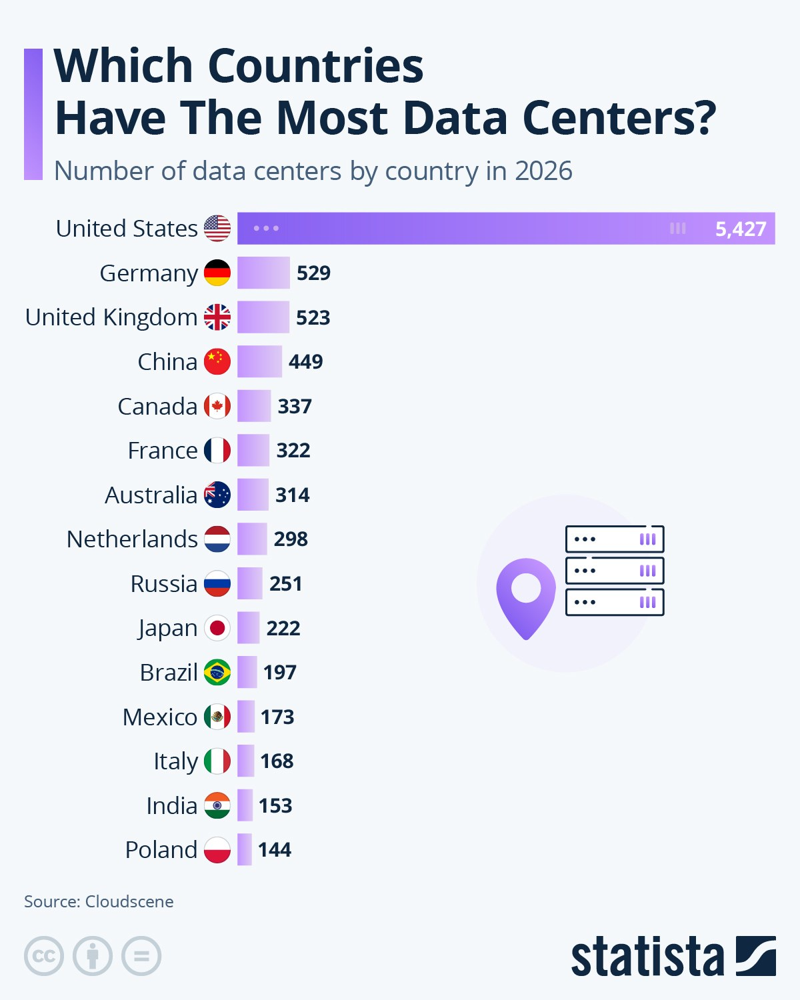
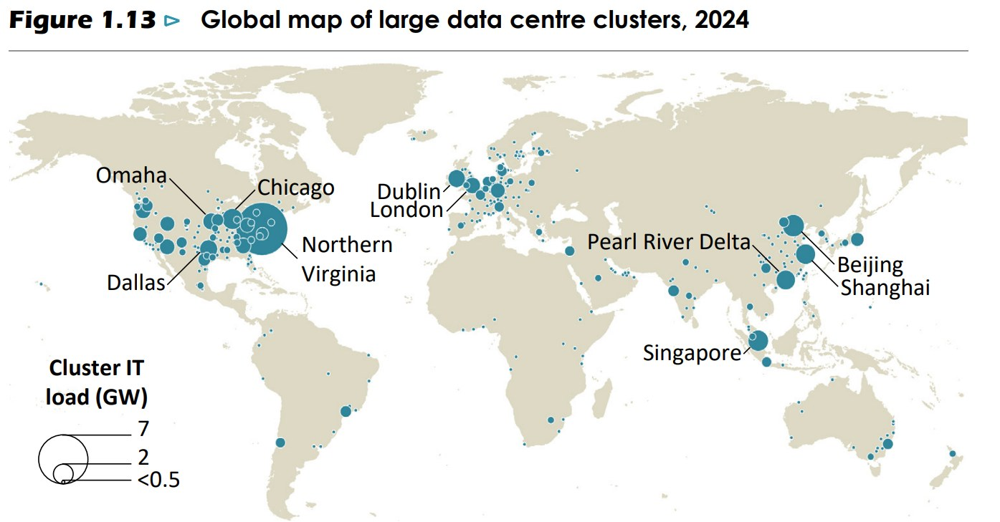
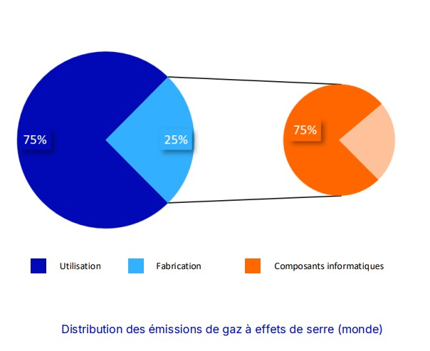
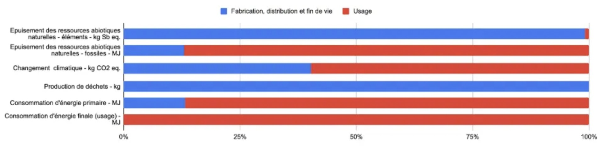
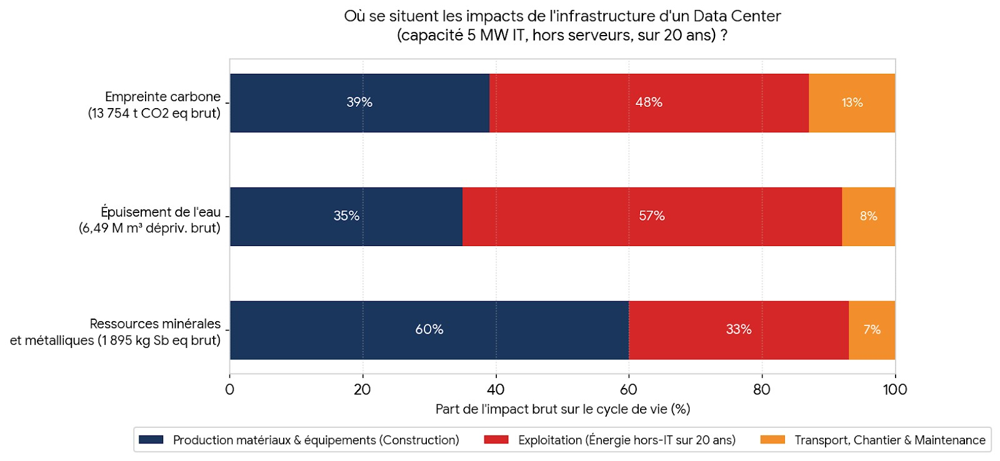

Quel est l'impact de la construction et de la mise en place des data centers ?
L'IA fonctionne grâce aux data centers. Nous présentons leur fonctionnement, leur répartition dans le monde et leur impact sur l'environnement.
Qu'est-ce qu'un data center ?
Les data centers sont des infrastructures composées de serveurs, de systèmes de stockage et d'équipements réseau permettant de traiter, stocker et transmettre des données. Leur fonctionnement nécessite une alimentation électrique continue, généralement fournie par le réseau électrique public et complétée par des systèmes de secours, tels que des batteries et des groupes électrogènes. Par ailleurs, les équipements informatiques produisent une importante quantité de chaleur, ce qui nécessite des systèmes de refroidissement permettant de maintenir une température adaptée. Selon les technologies utilisées, ces systèmes peuvent fonctionner à l'air, à l'eau ou grâce à un refroidissement liquide, avec une consommation d'eau variable selon les installations.

Source : Agence internationale de l'énergie (AIE), Energy and AI, 2025, figure 2.1. Licence CC BY 4.0.
Des data centers de plus en plus nombreux
Les data centers sont de plus en plus nombreux. Il en existe en effet plus de 11 700, dont 46 % sont concentrés aux États-Unis.

Source : Statista, d'après Cloudscene. Licence CC BY-ND 3.0.
La répartition mondiale des data centers est hétérogène, entraînant une disproportion de la demande de partage d'électricité. Les data centers se regroupent en clusters, localisés pour la plupart dans des pays développés et industrialisés.

Source : Agence internationale de l'énergie (AIE), Energy and AI, 2025, figure 1.13. Licence CC BY 4.0.
Une grande partie de nos appareils numériques sont fabriqués à l'étranger et utilisent des métaux dont la production est limitée à certains pays. Cela rend la France extrêmement dépendante de la stabilité économique et politique de quelques pays qui concentrent une grosse partie de la production.
![Carte du monde des principaux pays producteurs de métaux utilisés dans le numérique, en part de la production mondiale de 2022. La Chine est le premier producteur de 15 métaux stratégiques, dont le gallium (98 %), le magnésium (88 %), le tungstène (84 %) et plusieurs terres rares (70 %). La République démocratique du Congo produit 68 % du cobalt et 43 % du tantale, dans une zone de conflit armé ; l'Afrique du Sud 90 % du ruthénium et 74 % du platine ; la Russie 43 % du palladium ; l'Indonésie 48 % du nickel ; l'Australie 47 % du lithium ; le Chili 24 % du cuivre ; le Mexique 24 % de l'argent. Pour réduire cette dépendance, l'infographie propose de garder ses équipements plus longtemps, d'écoconcevoir les appareils et de favoriser le recyclage.](../assets/data-centers/dependance-metaux.jpg)
Source : ADEME, octobre 2024, d'après Deloitte (cartographie mondiale de l'extraction des métaux stratégiques pour le secteur numérique, d'après diverses sources dont l'USGS).
Un impact important sur le climat et les ressources
Les data centers ont un impact important sur l'environnement, spécialement sur le climat et les diverses ressources. De nos jours, la fabrication des divers objets, qu'ils soient électroniques ou non, représente 25 % des émissions de gaz à effet de serre. Notamment, les composants informatiques représentent 75 % des émissions de gaz à effet de serre produites par la fabrication des objets. Cela s'explique par la provenance des matériaux ainsi que par la méthode d'extraction, et équivaut à 1 750 kg d'émissions de CO2, soit la quantité de CO2 générée par un passager en classe économique sur un vol Londres-Hong Kong.

Source : À compléter
Les data centers produisent deux impacts principaux durant leur vie : un premier lors de leur fabrication, de leur distribution et de leur fin de vie, et un deuxième lors de leur usage. La fabrication, la distribution et la fin de vie ont un impact important sur l'environnement en termes de déchets et d'épuisement des ressources abiotiques naturelles, dont l'eau, qui représente une grande part de l'utilisation des data centers, soit environ 7 millions de m3. De plus, les composants électroniques ne sont pas assez recyclés de nos jours : le taux de recyclage des minéraux oscille entre 46 % pour le cuivre et 1 % pour les terres rares, ce qui est faible.

Source : À compléter
Exemple concret : analyse du cycle de vie du data center DC19 de Marcoussis (Data4)

Source : À compléter
ACV se présente comme la méthode la plus fiable et rigoureuse pour évaluer l’empreinte carbone d’un data center en vue des nombreux flux et impacts liés à ces bâtiments. On constate que la plupart des minerais sont extraits pour la construction du bâtiment Cependant, on remarque que les besoins en eau, eux, sont plus importants pour l’exploitation qui représente majoritairement le système de refroidissement l'entretien des serveurs et du bâti. De plus, l’empreinte carbone sur 20 ans correspond à 6200 vols Paris-New York ( un peu plus d’1an ). Cependant on peut critiquer l'évaluation qui ne rend pas compte de la construction des composants informatiques et la consommation électrique des composants.
Sources
Sources consultées par le sous-groupe, reprises de ses notes de travail.
- Nordic Computer, Quelles répercussions le matériel des datacenters exerce-t-il sur le climat ?
- France Environnement, Data centers et IA : quel impact environnemental réel ?
- ADEME, Les avis de l'ADEME, L'intelligence artificielle générative : des impacts environnementaux importants
- ADEME, La dépendance de la France aux métaux stratégiques
- Conseil économique, social et environnemental (CESE), avis sur l'IA et l'environnement, 2024
- Arcep, rapport sur l'IA et l'environnement
- Programme des Nations unies pour l'environnement, document sur l'IA et l'environnement
- Agence internationale de l'énergie, Energy and AI
- The Shift Project, présentation sur l'IA et les data centers, 2025
- Hubblo, billet sur les impacts importés des data centers
- Data Centers, Critical Minerals, Energy, and Geopolitics: The Foundations of Artificial Intelligence (ResearchGate)
- Statista, Which Countries Have The Most Data Centers?
- négaWatt, Les impacts de l'extraction minière